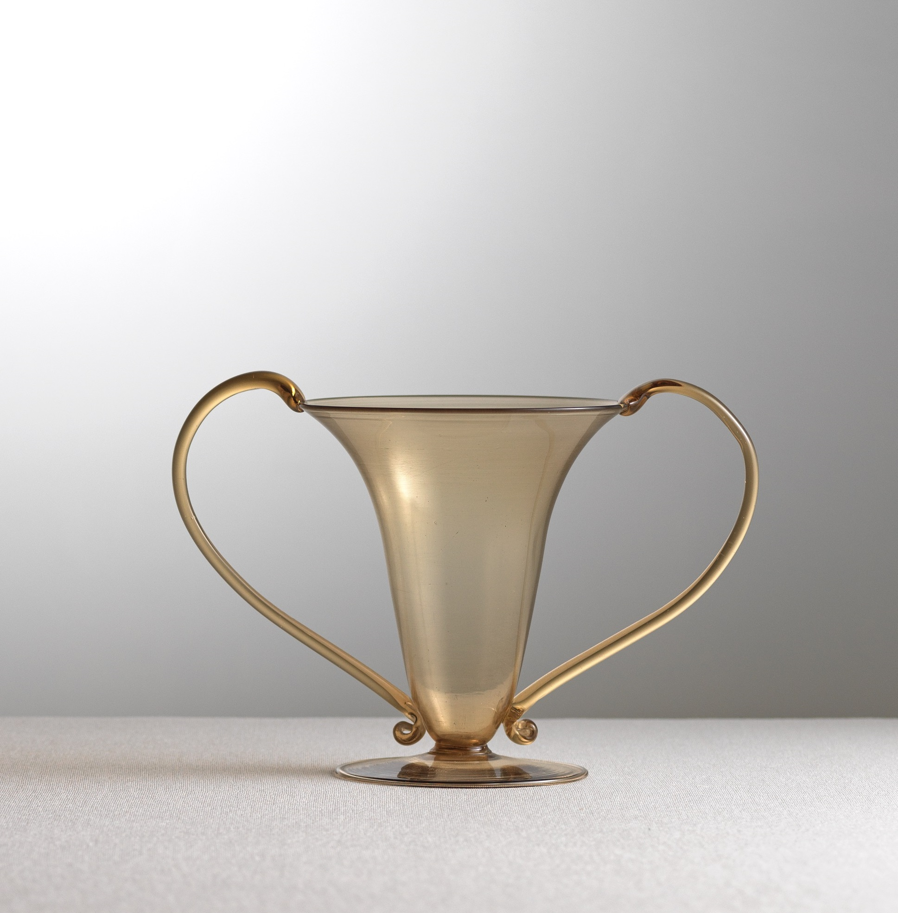
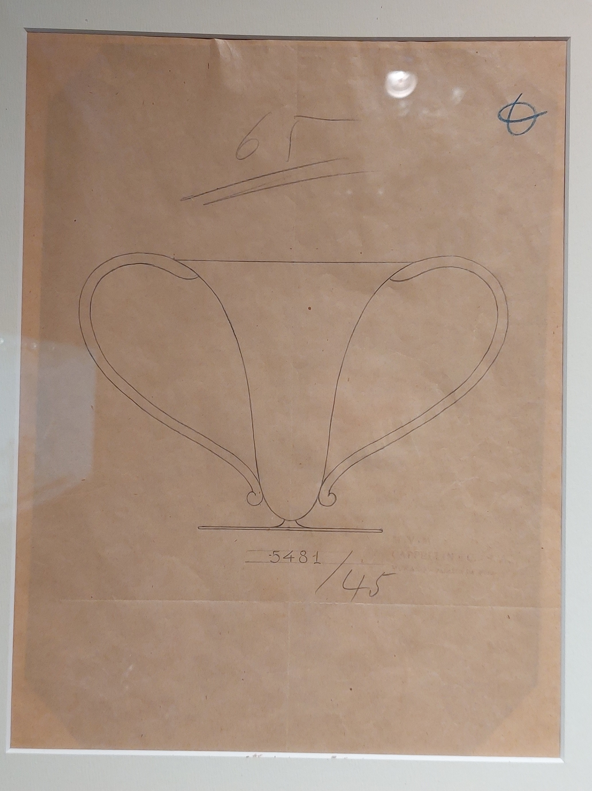
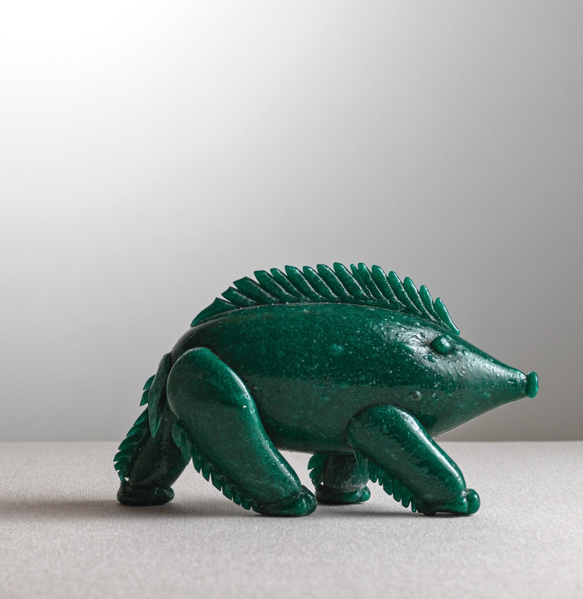
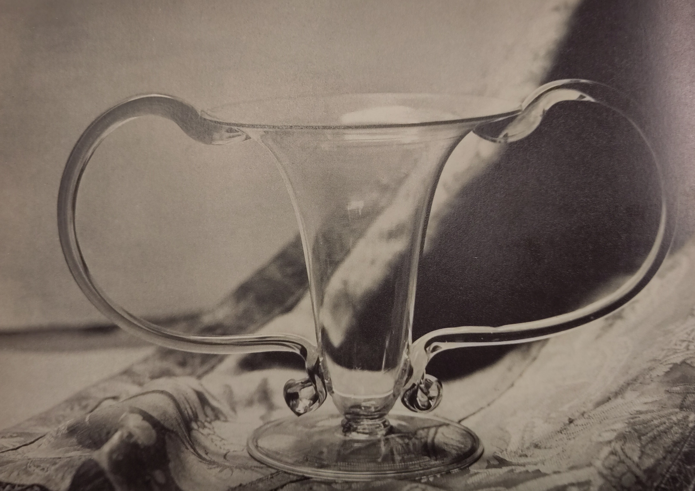

Il catalogo raccoglie oggetti, disegni, fotografie e documenti d'archivio legati al gusto decorativo italiano tra Otto e Novecento. Filtra per tipologia, poi scegli una scheda per approfondire.






Giuseppe Guidi, smalto champlevé, 1927.
Approfondisci